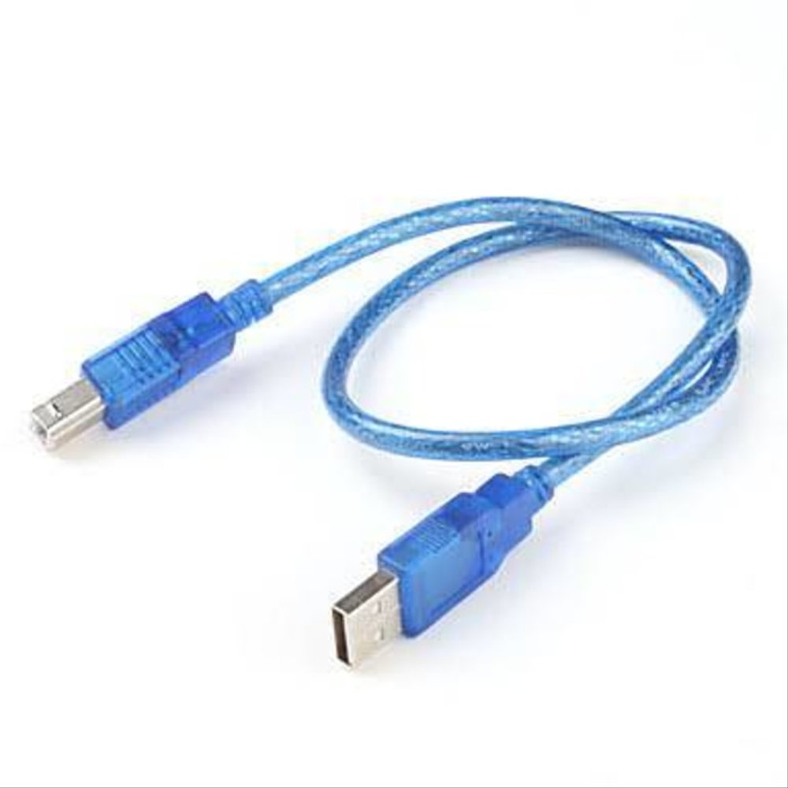
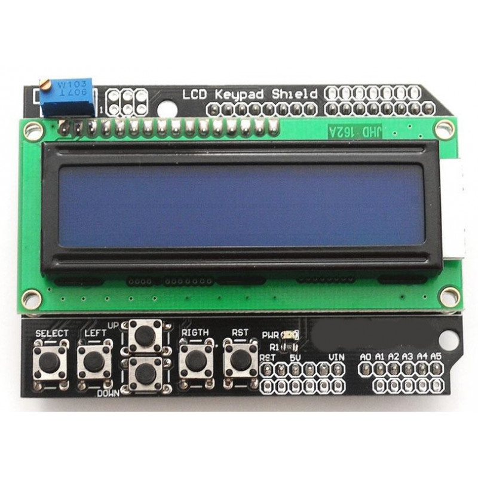

- Dostali jsme za úkol vytvořit program, který dokáže zjistit, když někdo projde po chodbě a tuto událost zaznamenat.
- Museli jsme si obstarat zařízení (Raspberry PI nebo Arduino).
- Dále jsme si museli obstarat další součástky jako je např.: ultrazvukový senzor či napájecí kabel k Arduino.
- Poté jsme si museli napsat kod, nebo si pomoct pomocí internetu, který bude funkční a bez chyb.
- Jakmile po chodbě projde osoba, UTZ senzor to zaznamená a uloží do proměnné.
- Poté na displeji proběhne textová zpráva.
- Případně po stisknutí určitého tlačítka může displej ukázat, kolik už senzor napočítal lidí a dalším tlačítkem tento počet resetovat na 0.
- To je tak vše, co toto malé, ale na tyto funkce výkonné zařízení umí :)
- o Měli jsme na to kolem 6 měsíců.
- Použitý je program od Arduino, který obsahuje programovací jazyk C nebo C++.
Programy:
- Použil jsem program přímo na Arduino stažený ze stránky níže:
- >>> https://www.arduino.cc/en/software <<<
Součástky:
- Vlastní počítač Arduino:
- Ultrazvukový senzor:
- Napájecí kabel k Arduino: 
- LCD display: 

- Zařízení je napájeno přes USB-A to USB-B.
- Napětí je 5V, proud ovšem jen 0.2A (200mA)
- Práce je to určitě zajímavá a výsledek může být pěkný a použitelný.
- Ale tento kód se píše v C nebo C++ a ani jedno jsme se neučili.
- Ani nic podobného jsme nikdy nic nedělali a ve škole jako součást výuky toto není.